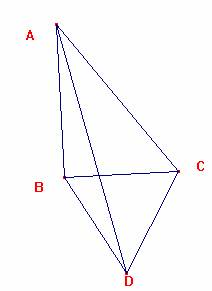
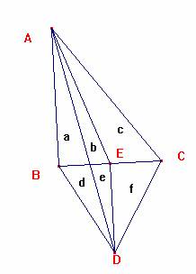

Para el aula
Problema 326
34. ABC es un triángulo rectángulo en B. Sobre BC hacia el
exterior del triángulo se construye un triángulo equilátero BCD, y se construye
el segmento AD. Demostrar que [BCD]=[ACD]-[ABD], donde
[BCD], [ACD] y [ABD] son las áreas de los triángulos correspondientes.
Aref, M.N., Wernick,W. (1968): Problems &Solutions in Euclidean
Geometry. Dover Publications,
Inc, New York. (pag. 58)
Solución del director
Sea la situación geométrica propuesta.

Tracemos DE perpendicular a BC, y AE. Obtenemos así seis triángulos:

Sean a, b, c, d, e, y f las áreas de cada uno de ellos.
Hemos de ver que: d+e+f = b+c+e+f – a – d
2 d + a = b+c
Al ser ED paralela a AB las áreas de ABE y ABD coinciden.
Ello nos lleva a que d=b
Luego hemos de ver que d+a=b+a=c, lo que es cierto al ser E punto medio de BC, cqd
Ricardo Barroso Campos
Didáctica de las Matemáticas
Universidad de Sevilla